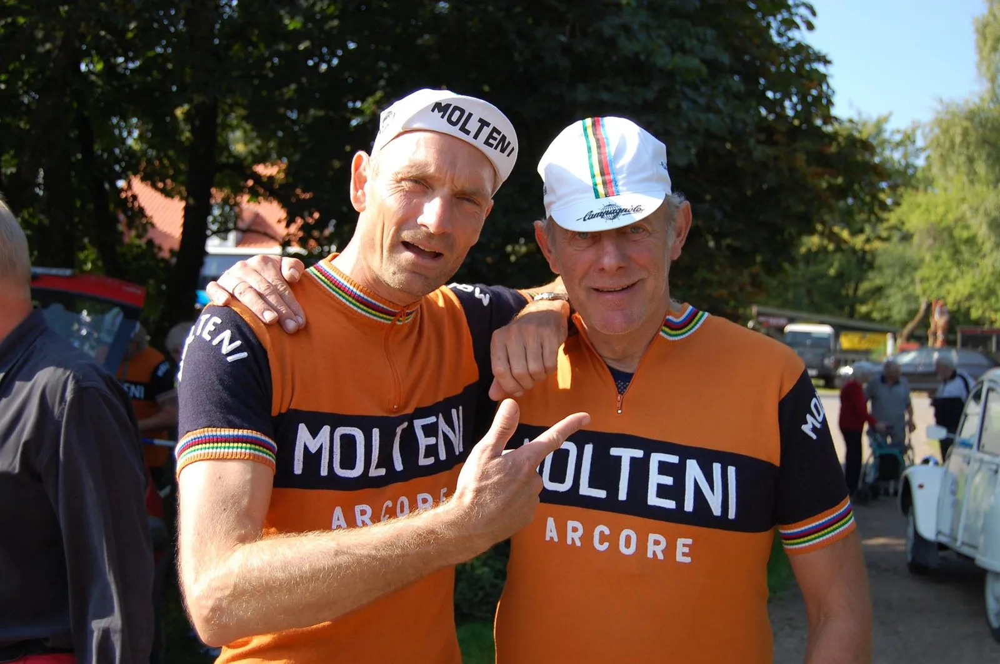

Molteni begrunder Salbutamol-sagen med skaldyrs- og nyreproblemer

Der har efterhånden været ro omkring Squadra Moltenis dopingprøve med for højt indhold af Salbutamol i et stykke tid. Nu har holdlæge Finn Birk og Capitan de Route Per Sandahl sammen fundet ud af, hvad årsagen til de unormale værdier var. Nemlig skaldyrs- og nyreproblemer.
En af dansk cykelsports store stjerner Per Sandahl og resten af Squadra Molteni, er for tiden under dopingmistanke. Tilbage i marts 2017, mens det danske retrohold var på træningslejr på Mallorca, afleverede Per Sandah og flere af holdets ryttere dopingprøver med en for høj værdi af Salbutamol. Dobbelt så høj som det tilladte. Sandahls var 4 gange så høj.
Siden har Per Sandahl, sammen med Squadra Moltenis holdlæge Finn Birk, arbejdet på en forklaring, som skal få ham og holdet frikendt. I første omgang, spekulerede de på, om for meget Sangria og San Miguel kunne spille ind – men den forklaring blev hurtigt droppet.
Men nu er Finn Birk kommet frem til den rigtige forklaring:
Den forhøjede værdi af Salbutamol hos Squadra Moltenis ryttere stammer fra en skaldyrsforgiftning i forbindelse med mallorcansk paella, der blev indtaget i store mængder på træningslejren. Per Sandahls meget store værdier af Salbutamol skyldes, at Per kun kører på én nyre. Og den er defekt, forklarer Finn Birk
Helt konkret betyder det, at Sandahls nyre har akkumuleret skaldyrene til Salbutamole, efter den er blevet forarbejdet af leveren, i stedet for at adskille og nedbryde dem.


Jeg kan bekræfte at Per akkumulerede enorme summer af Paella, da vi var på Mallorca. Faktisk var det et lille mirakel, at Per kunne komme op af Sa Calobra efter dén skål Paella han fortærede i bunden af den legendariske stigning, fortæller Kaptajn Bjørnsteen fra Squadra Molteni HQ.
Per kun har én nyre, som endda kører på halv kraft. Den har den bearbejdet de alt for store mængder af Salbutamol.
Pers krop har derfor virket som et slags depot for Salbutamolen, hvor mængden altså har ophobet sig, inden den så er blevet sendt ud i blodet i en alt for stor mængde. Dette resulterede i en 4 gange så høj værdi af Salbutamol i den antidopingprøve Per afleverede den 29. marts på Mallorca, fortæller Finn Birk.

Per Sandahl meddeler selv, at han er ved at være i storform – og at han har skumle planer for den kommende sæson, der indebærerer et meget højt bjergpas i de italienske Dolomitter.